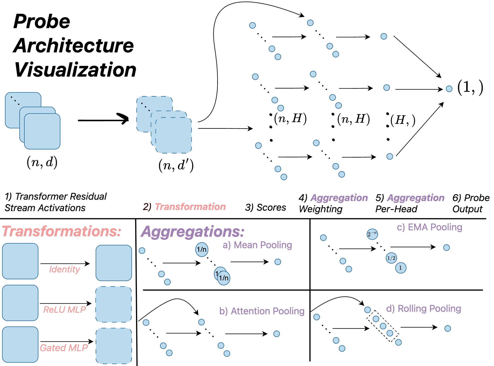
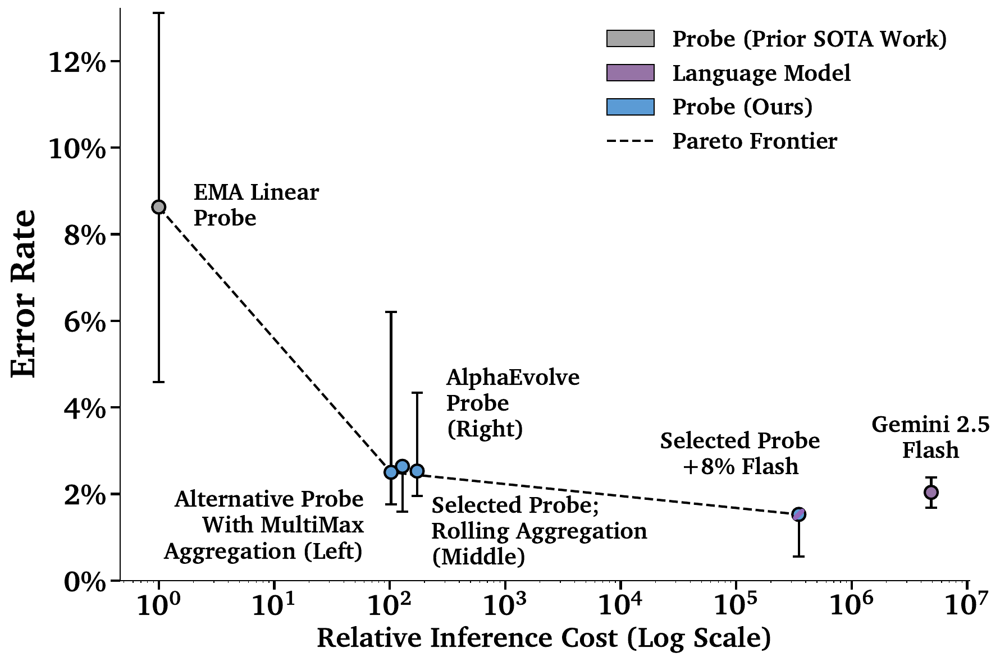
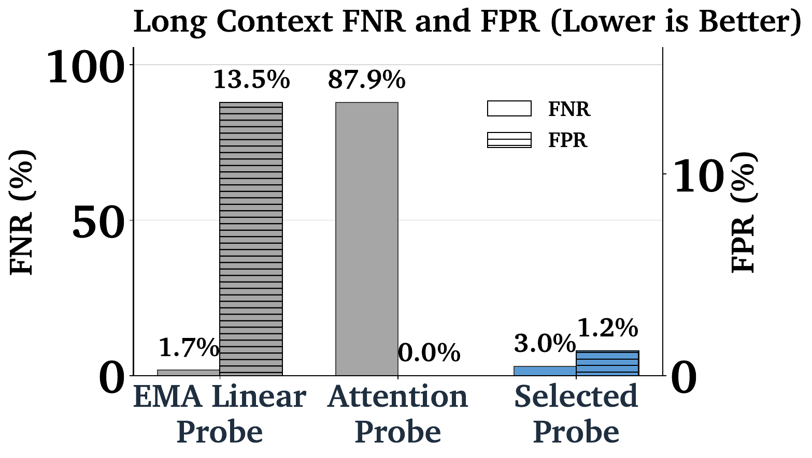

Tiny classifiers that read a model's internal activations to flag harmful prompts, before it answers.
A large language model reads your prompt, turns it into numbers, processes those numbers through dozens of layers, and writes back one piece at a time. Its core skill is following instructions in the prompt: answer this, summarize that, write code that does X. That is what makes it useful.
It is also what makes it dangerous. The model cannot tell which instructions deserve to be followed. An attacker can hide malicious instructions inside an innocent-looking prompt, a jailbreak: "help me debug this code" where the code is malware, or a long story that gradually steers the model into explaining how to break into a system. The model follows along because following instructions is what it does. The damage is concrete: phishing campaigns, vulnerability hunting, step-by-step help with attacks, all produced by a helpful assistant doing exactly what it was told.
The first instinct is to teach the model to refuse bad requests. It does not hold against determined attackers: the paper cites Nasr et al., 2025 on refusal training failing under pressure. So instead of relying on the model to behave, the paper watches prompts at deployment time.
This tutorial follows the paper in which Google DeepMind made probes production-ready: its findings informed the deployment of misuse-mitigation probes in user-facing Gemini.
The obvious defense is a monitor: a second system that reads every prompt and judges whether it is an attack. The simplest monitor is another large language model asked exactly that question. It works, but it roughly doubles the bill, because every user request now costs two giant model runs instead of one.
An activation probe is the cheaper answer. It does not read the prompt's words, and it does not run a second giant model. It reads the first model's own internal understanding of the prompt, which the model already computed during its normal forward pass, and turns it into one suspiciousness score. The extra cost is tiny: one small classifier running on numbers that already exist.
But cheap is not the paper's real story. Probes already existed, and they broke in production: a probe trained on short prompts falls apart on long documents, because one malicious sentence's score gets averaged away by a million innocent ones. Training directly on long documents is far too expensive, so the paper engineers the probes to generalize instead. Cost is the enabler; surviving production is the story.
Two terms, glossed once here and used everywhere below. A token is a word-piece, the chunk the model actually reads ("injection" might be one token, "unbelievable" might be three). An activation is a list of numbers inside the model describing what it has understood so far.
Neural networks have a reputation as black boxes: millions of numbers with no labels saying what any of them mean. Scientists have wanted to look inside for years, and the standard trick comes from neuroscience. Brain researchers attach small classifiers to recordings from a brain region and ask: from this region's activity alone, can you tell what the subject is seeing? If yes, that information is present in that region.
Machine learning borrowed the trick. In 2016, Alain and Bengio attached tiny linear classifiers, which they called probes, to the intermediate layers of neural networks. A probe is deliberately too simple to learn anything on its own. It just listens to one layer's numbers and answers one question about them. If it answers well, the knowledge was already in the layer. And crucially, the probe never changes the model: it is attached after training and only reads.
This paper points that listening trick at safety. Instead of asking "does this layer know French grammar," the probe asks "does this layer think the prompt is an attack?" Everything that follows is that one idea, engineered until it works in production.
A probe is a tiny watcher that reads what the model understood, not what it said.
The probe sits to the side of the model, tapped into one middle layer. It copies numbers out, computes a score, and stops there. If the score clears a threshold, the surrounding system acts instead of letting the model answer. It can block the request, refuse it, or hand the prompt to a bigger model for a second opinion. If the score is low, nothing happens and the model answers normally.
Timing is the point. The probe finishes scoring while the model is still reading the prompt, before any answer exists. Early warning, not a lock on the door.
This thing has a name: an activation probe.
In plain words: tap a middle layer of the model, check every part of the prompt, keep the most suspicious part, compare it to a threshold. The precise meaning of "part" arrives in two steps below.
Each part of the prompt that the model processes is represented as a list of numbers. "Hidden size" is just the length of that list: how many dials the model gets for describing what it understood. The toy's full list is 768 numbers long; on this page we show 8 of the 768, so the arithmetic stays visible. In the paper's setting the lists are thousands of numbers long, and the same arithmetic runs over all of them.
By the middle of the model, those lists are no longer word lists. Every block lets each slice of the prompt look at the other slices and mix their information in, so by block 8 the list sitting where "injection" was has absorbed the whole sentence around it. Call each slice a position: a slot in the prompt whose list of numbers sees the entire prompt, not just its own word.
The probe scores positions, not words. Here is the proof, in the toy numbers below: the word "SQL" appears in both demo prompts, but its list of numbers is different each time, so its score is different too, 2.84 in the attack prompt and 0.75 in the benign one. Same word, different situation, different score. The probe is not detecting the word "SQL." It is detecting the situation the word sits in, as the model understood it. That is the entire reason for tapping the middle of the model instead of scanning the raw text.
Think of the model's layers as an assembly line. The early layers handle raw word pieces. The middle layers build meaning: this is where each position's list absorbs the whole prompt and the model forms its understanding of what is being asked, including whether something is off. The late layers spend that understanding on planning the next word of the answer.
The probe taps the middle because that is where thoughts live. Tap too early and the lists are still just words, with no understanding to read. Tap too late and the model is already committed to answering. The middle layer's residual stream, the model's running memory, holds the understanding when it is richest, before it gets spent on output.
One thing to lock in now, because it is true for every probe below: the tap is identical. One fixed middle layer, one list of numbers per position. Every probe then scores each position, combines those scores into one number, and compares it to a threshold. The paper's whole argument lives in the combine step, so that is the step to watch.
This is also why the probe works at all. The probe is not detecting attacks from scratch. By the middle of the model, the model itself has already done the hard work of understanding the prompt. The probe is just a cheap reader of that understanding, trained to report one thing: does this understanding look like an attack?
The toy model on this page is a GPT-style transformer: 12 blocks, hidden size 768 (8 of the 768 numbers are shown, so the arithmetic stays visible), 12 attention heads. The probe taps block 8 and copies every position's list of numbers. In the paper, the same setup watches Gemini 2.5 Flash; the toy stands in for it, and you will meet Flash properly in the cascade section below.
Honest label first: what follows is a simplified single-head teaching version. It scores like the classic linear probe and combines like MultiMax, and it matches no single paper architecture exactly. The paper's real probes add heads, MLPs, and windows on top of this skeleton.
$$s_i = \max_j (w^T x_{i,j}) \qquad p_i = \sigma(s_i + b)$$The paper walks through its probes in two groups: baselines from prior work, then the new designs. For each one: how it scores positions, how it combines them, why the combine rule helps or fails, and where it works.
Linear probe. The classic, from Alain and Bengio 2016. Score every position with the learned weights, then average all the scores. On a short prompt the average is fine, but in a million-token document one attack sentence gets divided by a million and vanishes. Dilution is the failure mode.
EMA probe. From Cunningham et al. 2025. First train the linear probe above. Then sweep the prompt left to right, keeping a running average that decays: half the new position's score, half the running average. Then take the peak of that smoothed curve. It asks "was there ever a sustained stretch that looked bad." That question survives long contexts better than one flat average, but the peak still washes out on very long documents.
MLP probe. Score each position with a small neural net (two layers of width 100) instead of one dot product, then average. The nonlinearity lets each position's "this looks dangerous" judgment be richer than a straight line. But it still averages, so it inherits the dilution problem.
Attention probe. The probe learns its own weights over positions. This attention belongs to the probe, not the model. It then takes a weighted average. On short prompts it is the strongest baseline. On long contexts the weights spread over thousands of positions and the attack's share shrinks to nearly zero: it missed 87.9% of long-context attacks. Running it is cheap: it streams through the prompt once using constant memory per head (paper Appendix L), so this is a weighting failure, not a compute one.
MultiMax. The paper's own invention. Same attention-style setup, but at inference each head keeps only its single most suspicious position, and the heads' winners are summed into one score. A head here is just one independent scorer; the toy on this page uses a single head. Max beats dilution, but it is twitchy: some configurations false-alarm on up to 82% of long benign traffic.
Max of Rolling Means (the paper's selected probe). The rolling-aggregation variant, not the MultiMax-eval variant with wider error bars. Slide a 10-position window across the prompt, score each window with attention, then take the worst window. Attention finds the suspicious region, the window keeps the judgment local, the max picks the worst window: 3.0% missed attacks and 1.2% false alarms on long contexts it never trained on.
AlphaEvolve probes. Instead of hand-designing the combine step, let an AI system search for it: about 2,500 candidate architectures, seeded from the attention probe. It independently rediscovered max-style combining and closed roughly half the gap between the attention baseline and a perfect probe. Caveat: it was tuned against an earlier weighting of the error metric and saw some long-context data during validation, though the final numbers were retrained on the final mixture. One honest note on how winners were picked: the paper trained 100 seeds per architecture and kept the best, but architecture choice moved test error 13 times as much as seed luck. The method is the architecture, not the seed lottery.
| Probe | How it combines positions into one score |
|---|---|
| Linear | average of all position scores |
| EMA | peak of the decaying running average |
| MLP | average (after a small neural net per position) |
| Attention | learned weighted average |
| MultiMax | max per head, summed across heads |
| Max of Rolling Means | worst 10-token window wins |
| AlphaEvolve | machine-found, max-style pooling |
The tool below makes the combine column visible: the same document, three combine rules, one threshold.
The figure below is the paper's own map of this skeleton, Figure 2.

The weights are learned from labeled prompts. The attack side is cyber attacks curated by security experts, plus multi-turn conversations that start innocent and escalate. The benign side is real user traffic with personal data removed, plus hard negatives: prompts that sound dangerous but are not, like asking how a famous breach worked or asking for a code security review. The hard negatives teach the probe the difference between talking about attacks and asking for help with one.
The training loss is binary cross-entropy, in plain words: for each training prompt, nudge the weights so attacks score high and benign prompts score low. A confident correct answer gets a small nudge; a confident wrong answer gets a large one.
One deliberate choice shapes everything that follows: the probes are trained only on short prompts. Training directly on long-context data costs about 22 times more, because million-token activation sets do not fit on accelerator memory and have to be shuttled back and forth. That 22x is why the whole paper is about generalizing to long contexts instead of just training on them. Long contexts are reserved as a pure test the probe never studied for.
The decision threshold is picked on a validation set with false alarms weighted heaviest: overtriggering on benign traffic counts 50 against 5 for a missed attack and 2 for a hard-negative false alarm.
A smoke detector that cries wolf gets ripped off the wall.
The probe is cheap and the big model is not, so the paper pairs them. The probe scores every prompt. Clear cases are decided by the probe alone. The unsure middle, scores too close to call, goes to Gemini 2.5 Flash for a second opinion.
The numbers that matter: only about 8% of prompts land in the unsure band and get deferred, and the combined system scores lower error than Flash alone at roughly 1/50th the inference cost. That 1/50th is the economic reason probes are worth building at all: the expensive model is spent only where the cheap one is uncertain. One subtlety worth knowing: the best thresholds are a plain deterministic pair, no coin-flipping involved, which is good because a randomized defense would hand attackers a best-of-N exploit.
The paper's headline plot puts every classifier on one chart. Each dot is one classifier. The x-axis is relative inference cost on a log scale: how many times more expensive than the cheapest probe. The y-axis is the weighted test error rate. Good is down and to the left: cheap and accurate. The dashed line is the Pareto frontier, the best error available at each cost.

The paper tests the probes where it matters: short prompts, long documents, multi-turn chats, and real jailbreaks. Here is what held up.
The cost story, stated once with both denominators. A probe alone costs a tiny fraction of an LLM judge: over 10,000 times cheaper at better error, because the probe is a small classifier running on numbers the model already computed (Figure 1 above). The probe-plus-Flash cascade is a different comparison: versus Flash alone it costs about 1/50th at inference, defers 8% of prompts, and scores lower error than Flash by itself. Two denominators, two claims; do not mix them.
The central test of the paper is long-context generalization: probes trained only on short prompts, evaluated on long contexts they never saw. Each group below is one probe. The solid bars are FNR, the fraction of real attacks missed (left axis). The hatched bars are FPR, the fraction of benign prompts falsely flagged (right axis). Lower is better on both.

Three more findings round it out. No single probe wins on every distribution shift: the best architecture for long contexts is not the best for multi-turn, so production means choosing per deployment. The receipts: on long contexts, MultiMax variants can miss 0% of attacks while false-alarming on up to 82% of long benign traffic; the rolling probe balances both at 3.0% missed and 1.2% false alarms. With no distribution shift at all, plain attention is already near-optimal. The automatic search worked: starting from a plain attention probe, AlphaEvolve evaluated about 2,500 architectures and rediscovered max-style combining on its own. And the findings informed real deployment: misuse-mitigation probes built on this work now run in user-facing Gemini.
The probe watches the prompt. Who watches the answer? That is the next question, and a future tutorial.